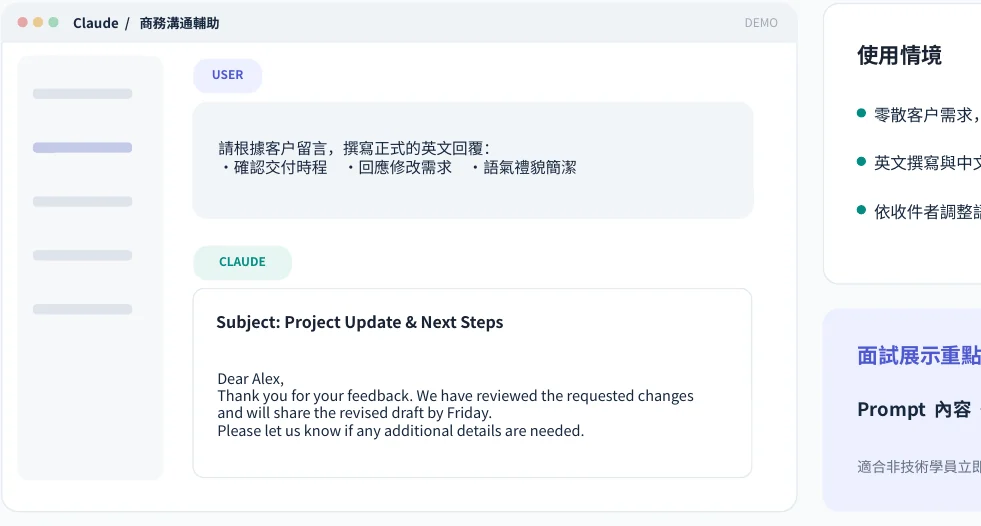
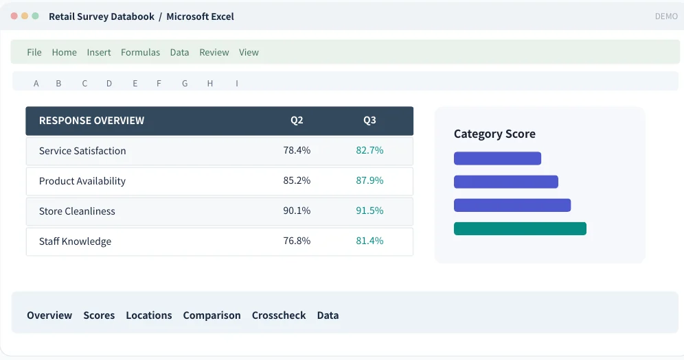
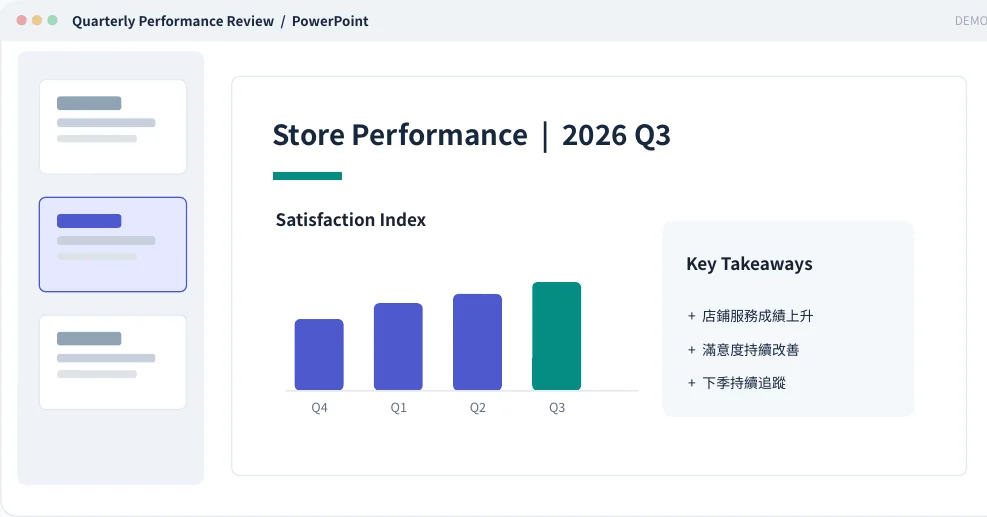

CHARLIE / THE AI WORKSHOP / 2026
AI Applications
& Automation
從 AI 應用到真正可交付的工作成果
讓你可以直接動手試的 AI 作品集。修改一段需求、換一組數字，看看內容與報表如何更新，再探索背後的 Prompt、Skills 與自動化流程。
ReportFlow Studio / Reporting Workspace
Business Performance Overview獨立概念介面 · 數值皆為合成資料
Total records2,500
Locations35
Output types02
Excel & PowerPoint
Generated Output
Generated Output
06組精選
AI 專案主題
AI 專案主題
02類企業級
可編輯報表輸出
可編輯報表輸出
01套完整
實務展示路徑
實務展示路徑
PLAY / EDIT / EXPLORE
把作品打開，
現在就試一次。
選擇一個任務，修改需求或數據，即時查看處理結果。
ABOUT / APPROACH
不只是使用 AI。
更理解如何把 AI
變成可驗證的成果。
我的專業背景涵蓋數據分析、資料工程、Python、自動化報表與 AI 輔助開發。這份作品集將技術轉換為容易理解的辦公室應用案例，並以報表系統展示進階實作能力。
從真實工作任務出發商務郵件、Excel 分析、文件知識問答，而不是只談工具功能。
設計可重複使用的 AI 流程使用 Prompt、Skills、Claude Code 與 Codex 建立標準化的批次工作方式。
進一步完成可編輯的商務輸出以獨立模擬系統說明 Excel 資料模型與 PowerPoint 原生物件的輸出設計。
兼顧資料品質與使用者學習門檻讓非技術使用者能理解流程、檢查結果，並將內容應用到日常工作。
SELECTED WORK / 01–06
六個作品主題，從辦公應用到系統開發
先展示一般辦公室中最常見的 AI 使用情境，再延伸到批量生成、專業報表輸出與 AI Coding Agent。
PROJECT 01 / OFFICE WRITING
讓商務文字更清楚，
也更有效率。
以模擬客戶訊息為輸入，運用 Claude 與 ChatGPT 產生適合不同情境的商務回覆。藉由 Prompt 結構設計，控制語氣、資訊完整性與輸出格式，最後由人工確認再使用。
整理需求→設計 Prompt→產生草稿→人工審閱
模擬內容與操作示意，不代表真實客戶資訊
PROJECT 02 / DATA ANALYSIS
用自然語言完成
Excel 分析與報表摘要。
使用虛構的零售銷售資料，透過 ChatGPT／Claude 輔助理解欄位、整理營收趨勢、產生圖表與管理摘要。教學重點不只是產生答案，更包括交叉檢查與驗證數字。
快速探索用簡單問題找出銷售變化與產品排行。
結果驗證將 AI 結果與試算表原始數字核對。
KPI 與視覺化圖表皆使用模擬資料
PROJECT 03 / PROMPT & SKILLS
讓一次 Prompt，
變成可重複執行的流程。
把內容產製需求拆成清楚的規則與輸出格式，再封裝成 Reusable Skills，由 Claude Code／Codex 協助批次處理。展示 Prompt 設計、流程拆解、批量執行與品質檢查的工作方法。
Prompt→Skills→Batch→Review
批次工作流程概念介面
PROJECT 04 / KNOWLEDGE WORK
從長篇文件，
找到可查證的答案。
以模擬員工手冊、FAQ 與流程規範建立 NotebookLM 文件庫，展示如何從多份資料中提問、摘要與追溯引用來源，降低閱讀與搜尋成本。
所有文件與問題均為模擬內容
FEATURED WORK / PROJECT 05
資料進來，
專業報表就能產出。
參考實務專案中的通用技術概念，重新設計一個不包含公司與客戶資料的報表自動化展示。展示如何讓使用者在介面中設定資料與期間，說明 Excel Databook 與原生可編輯 PowerPoint 的輸出設計。
PythonStreamlitData TransformationExcel Power Pivot / DAXpython-pptx
Input模擬調查資料與報表設定
Process資料清理、驗證、模板整合
Output.xlsx ＋ .pptx
REPORTFLOW / INTERACTIVE WORKSPACE
從資料到報表，走一次完整流程。
調整篩選條件，核對有效樣本，再查看兩種輸出的結構。
01 合成資料→02 資料驗證→03 報表預覽→04 人工驗收
查看原始概念畫面
EXCEL DATABOOK / 網頁預覽
.xlsx 概念可重新整理的分析，先從一致的數字開始。
下方為網頁表格預覽；資料模型、Power Pivot 與 DAX 是完整報表的設計方向。
Experience_Databook
| 區域 | 有效問卷 | 滿意份數 | 滿意比例 |
|---|
分析摘要合成原始資料（概念）驗證紀錄（概念）
驗證規則 滿意份數 ≤ 有效問卷；區域加總須等於總計。
彙總方式 總滿意份數 ÷ 總有效問卷，避免直接平均區域百分比。
重新整理設計 原始資料 → Power Query → Data Model → Pivot / DAX。
查看 Excel 輸出概念圖

POWERPOINT / 網頁預覽
.pptx 概念以資料驅動簡報，保留後續修改的彈性。
下方為網頁投影片預覽；完整輸出設計使用原生文字、形狀與圖表物件。
文字 對應資料欄位與摘要規則；可在 PowerPoint 中修改。
圖表 設計為原生圖表與內嵌資料，避免僅輸出整頁圖片。
驗收 核對 Excel 與簡報的期間、樣本數及四捨五入後數值一致。
查看 PowerPoint 輸出概念圖

TAKE A SAMPLE / 真實 Office 檔案
把可編輯的作品，實際打開看看。
2026 Q3 合成資料報表。Excel 含原生公式；2 頁 PowerPoint 含可編輯圖表與表格。下載檔為固定版本，不隨篩選條件變更。
保密說明：上列為獨立重建的概念畫面，非公司內部系統截圖；數值與資料均為示意。
PROJECT 06 / AI-ASSISTED DEVELOPMENT
Claude Code × Codex
從需求到可驗證程式。
運用 AI Coding Agent 協助拆解任務、閱讀程式、提出修改、實作功能與測試。結合人工程式碼審查與結果驗收，形成具可追溯性的開發工作流程。
Requirements→Agent→Review→Test
AI 輔助開發流程概念介面
CAPABILITIES / TOOLKIT
技術工具不是終點，
而是解決問題的方法。
依照辦公室使用者的需求，選擇適合的 AI 工具；在需要批次處理、資料驗證或專業輸出時，再加入程式與工作流程。
AI APPLICATIONS
日常辦公應用
Claude、ChatGPT、NotebookLM、商務文書、摘要、資料分析。
AI CODING
Agent 協助開發
Claude Code、Codex、VS Code、Prompt、Skills、Git。
ANALYTICS
資料分析與報表
Python、pandas、SQL、Excel Power Pivot、DAX。
AUTOMATION
自動化與交付
Streamlit、PowerPoint、資料轉換、報表批次產製與測試。
TEACHING / LEARNING OUTCOMES
以學生能帶走的成果，設計 AI 課程
從零程式門檻的工作情境開始，再依學員需求延伸到批量生成與自動化。
01 / FOUNDATIONS
AI 基礎與 Prompt
任務拆解、提示詞設計、文字內容查核與安全使用。
02 / OFFICE ANALYTICS
AI Excel 分析
資料理解、圖表產生、商業摘要與數字驗證。
03 / KNOWLEDGE
文件整理與問答
NotebookLM、來源引用、文件比較與資訊查找。
04 / AUTOMATION
AI 工作流程與進階應用
Claude／Codex、Skills、批次生成與 Python 自動化入門。
AI 的價值，在於真正完成工作。
以實務案例展示：理解任務、設計流程、驗證結果、交付成果。